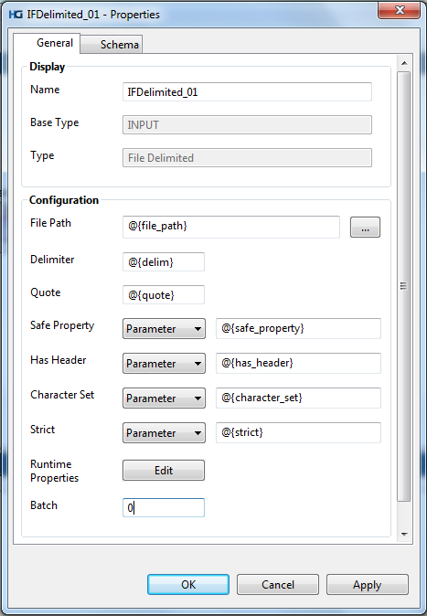
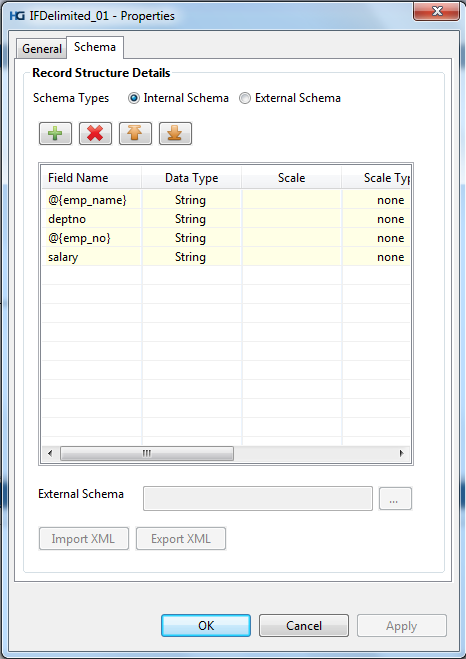
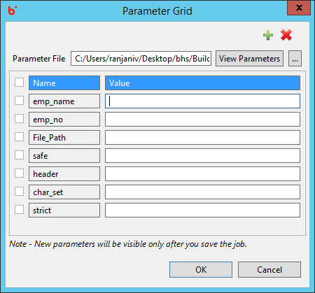
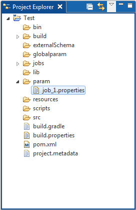
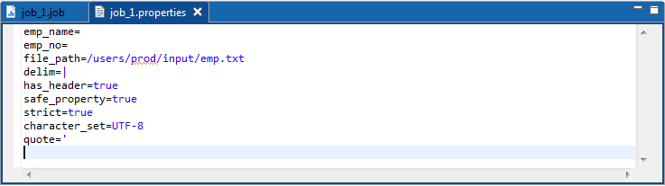

How to Parameterize Component Properties
Almost all properties can be parameterized in Hydrograph.
The parameter format that needs to be followed should be - @{Parameter_Name}. Alphanumeric values should only be used while specifying the parameter name. '_', '{}' and '@' are the only special characters allowed. For instance, the image below depicts parameterization of all the properties present in the General tab of the Input file delimited component.

Users can also parameterize field names and field values under the schema tab. Naming convention rules are applicable throughout the product.

Each parameter that is created by the user gets displayed on the Parameter Grid once user saves the job. Users can provide values to the parameters which get saved in a text file as key=value format.
Optionally, one may also create a properties file and browse it into the grid using below buttons,
Users can also add or delete or search parameters from the parameter grid interface.



Parameters once created can be used across a job at multiple locations wherever needed. Foe eg- the Is Header property if parameterized can be used in all the Input/Ouput file components where the value for the parameter has a chance to remain the same.